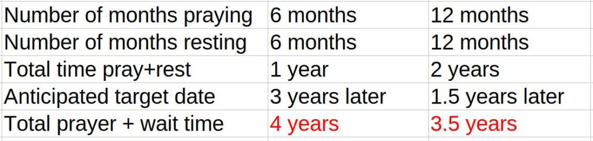
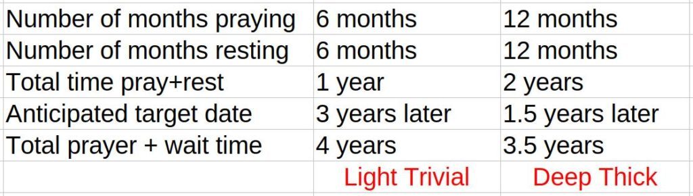

This article is very important. I get a lot of comments from people who run an affirmation campaign, or two, and are surprised that nothing seems to be happening. They wonder what they are doing wrong. And it is very upsetting to them. So what I want to do here is explain a couple of things to put everything into perspective and to set the proper systems in place and corrective actions for those desirous of it.
So what happens? You are running two, three maybe ten campaigns of prayers. You are following the directions and the format exactly. You are doing everything that you are supposed to be doing, but still it doesn’t seem like you are getting anywhere. What is going on?
Introduction
It all began with this email that I got the other day…
I’m not sure if i should write you this like this or if i should put it in the comment section. The thing is this. It feels my prayers aren’t being answered or even getting closer to being answered. That’s the short version. Lol.
That’s pretty straightforward and clear.
The longer story is this: I started praying your way with some slight modifications in the wording in September 2020.
So you have been running affirmation campaigns for just over one year and you are not seeing any results.
One year is a extremely short span of time to expect results.
My rule of thumb is for every combined cluster of six months of affirmations, you see results in three years.
Depending, of course, on your situation, and the complexity and difficulty of your desires.
So lets’ s suppose you ran a total of eight weeks of prayers in campaigns. That equals a total of two months. My rule of thumb would then place your targeted goals out at about nine years from now.
Here’s my handly-dandy goal manifestation estimation table…
Of course, the personal situation and all things considered can mitigate these projected target dates. As well as how you do them, and all the rest. It’s just a guide that varies from person to person.
Now, the astute observer would notice something VERY interesting about this table above.
Let’s look at it again…

So what gives?
It doesn’t seem like it is worth it. An extra six months sooner for doubling the amount of prayers doesn’t seem to make sense. It’s a lot of extra work for just a slight decrease in the wait time.
Ah. But the point here is that you should all be having multiple affirmations in your campaigns. Not just one singular goal.
The more different affirmations the crunchier and compressed your manifestation dwell time.
Or to put it another way, you WANT to have more and varied descriptions of your goals, not less. And these extra prayers adds complexity that adds depth and breadth to your resultant objectives and colors to the results.

So in short. Don’t be impatient. Run your campaigns. Follow the formula, and know that they will manifest.
Let’s continue with the email contents…
The modifications i did are to pay respect to God. Being a Catholic. The way i say my prayers are still in a present tense and positive way.
There’s no problem with that. You do have to be care in one aspect of prayers, however. You CANNOT say…
- God please grant me permission to have XXXXX…
Absolutely not.
You must say thing specifically in this manner…
- I have XXXXX.
It is very important that you say things in a [1] positive, [2] present, [3] perfect [4] tense sentence structure.
I started by doing one month on and one month off. During the first pause a lot of things got worse. Just like you said. I figured, no worries just keep it up. After the second pause things got worse but some things also showed signs of improving. And because it seemed my prayers were being answered i decided to keep my prayers more or less the same.
Yes. You are correct. This is the way it works.
I specifically decided not to get greedy and ask for huge things or whatever. I felt grateful and just wanted the rest of my prayers to be answered. Now as you yourself know even better some prayers aren’t answered but you are given opportunities to do some things yourself to get to what you want.
Yes, this is how it works. No problem here.
Well up until my fourth pause , which was in april 2021 , things seemed to go that way. After that it just seems like my prayers are being blocked or stay just out of reach.
This indicates an issue. Some potential issues or causes, the top culprit being…
- Conflicting affirmations (given your current situation). You would be amazed how certain words or phrases can completely derail your affirmations.
Other issues / contributors that are commonly encountered include…
- Timing
- Curses
- Handicaps
- Pre-birth world-line Templates
- Expectations
- Negative partner
- Bombarded by electromagnetic radiation
- Inauspicious fate
In the meantime some prayers were answered but still. One of my main prayers. Which is owning my own house seems to come in reach and then gets taken away just as quickly. Almost as if something out there doesn't like me.
This is a common enough experience, and I do know what is EXACTLY going on here in this particular issue.
It might seem like there is a barrier, and maybe there is. But I am willing to guess that there is a conflict in your affirmations. How?
Let me illustrate with two simple affirmations in a singular campaign.
- I and my family are happy, safe and secure.
- We own a nice house.
Then as time moves on, opportunities for a house appear. and you are just about ready to get the house deal, but then it falls through. So you try again. Same neighborhood. Again it falls through. So you see something at another part of the city, and still it falls through.
Chances are that sure… you might be able to buy the house. BUT… you will never be allowed to because if you lived in any of those houses you and your family will not be happy, safe and secure. You see, you have to turn off your mind from things cause and effect.
You need to start thinking fourth dimensional and asking for guidance. I would thus add these affirmations…
- I am given direction and nudges that tell me which affirmations to change or alter so that I would be happy and healthy as would be my family as well.
- They will provide me insight and feedback as to how successful my affirmation campaigns are working.
With this, you would obtain feedback loops and nudges as to how to direct your affirmation campaigns.
The same thing happened with some other prayers. Now there are a couple of things i noticed since April 2021 and i hope these things sound familiar to you. - Some things show up during the pause phase, but the also disappear during the same pause phase. - Those disappearing things drifting back into my life when i start praying again.
What is going on is that the supporting underlying structures are not fully mature for the affirmations to manifest.
Think of an individual affirmation as a hearty meat and potato stew. If you don’t allow the time for the stew to cook, it will be watery, trivial, and plain. You have to let it cook for hours to allow the potatoes to soften, and the meat to tenderize and the broth to form.
This has happened with me, OMG! Time and time again.
Like when I wanted a nice Cadillac automobile. And it manifested. And then six months later the Air Conditioning died, and I was living in Arkansas where it was hot and humid and I was sweltering in my nice car with no Air Conditioning. But to repair the A/C cost $8000 USD. Ugh!
What I said was…
- I own a nice big impressive roomy executive automobile.
When what I should of said was something different. Early on, I noticed that when I put special “but” affirmations in my campaigns they would stop those mistakes from happening.
You OBVIOUSLY have a few “but” affirmations that are causing things not to manifest.
So what is going on here?
As I see it there are two things that are plainly going on…
- You are not letting the affirmation campaigns cook. You want your goals NOW, and not in two years when you are fully ready for them.
- There are some “but” affirmations that are preventing certain manifestations from happening.
This let me to think about shortening my pause phases.
No. No. No. You want to lengthen the pause phases. Not shorten them. Never shorten them.
Also because you wrote about how one can have shorter pauses. You wrote this in an older article. All though you never wrote why that can be done i figured this might be what i needed to do based on how things went the last year. So i decided to pray for six weeks starting in November and then resting for the rest of December. Which would be about 3 weeks.
You can have shorter pauses, but it is ill advised.
Think of the stew. Sure you can have a quick bowl of stew early on. But it will not be as tasty as one fully cooked. It’s like a pizza. Sure you can take the pizza out early, but the cheese won’t be melted, and the crust will be soft and wet.
And then on December 1 you put out your article in which you say that you can actually EXTEND your pause phase. Which now has me wondering even more on what to do. Shorten my pause or extend it?
Extend the pause phase. When in doubt or questions, always extend the wait time.
More questions
The Questioner continues…
There are way more things i would like to write to you, but i know you are busy so can i ask you this. 1: does this e-mail of mine give you ideas for add on articles on prayer campaign details that people need to know about. Like what happened with me and how and what we need to do to fix these things when they occur during our prayer campaigns.
Yes. It generated this article and I am confident that one or two others will find the information valuable.
2: If my mail isn't worthy of an article because its not something that would make for a beneficial article for a lot of people or even if it is could i please at least ask for some short answers on the following questions.
No problem, I will help in any way possible.
1: you said that you shouldn't do one month on and one month off campaigns for more than 8 months. I am over that time period already. So should i start my new campaign now right away or would it still be better to actually extend my rest period until February
In your case, I would conduct a base line campaign with an extended rest phase. You should be running a three month campaign (12 weeks) followed by a three and a half month rest period (14 weeks).
1. So my last campaign lasted 6 weeks and would then have a pause phase of 7 weeks instead of 3.
Yes. That is correct.
2: i have gathered from experience that whatever that you gained from prayer only drifts back during pause phases and not during campaigns. I’m talking about things that would require multiple campaigns to become more permanent in your life. It seems that prayer campaigns put a hold on the drift back effect. Am i correct on this?
Yes, in general. You are right. There are exceptions, but in your case this does seem to be the case.
MM comments…
"I own a house in Zhuhai".
[1]
[2]
[3]
[4]
[5]
Personal issues
The house is in the same geographical area. We can take the bus and go anywhere we normally go. It’s only that the administration is of a different community, the taxes and prices are different. That’s it. So in essence we have almost what we want, however, it is not EXACTLY what we want.
By keeping the affirmations in place, I can tell you all from experience that the desires, goals and dreams will absolutely manifest. You all just must be patient.
So please be patient. They always manifest. I have some of the most outlandish desires COME TRUE. Things that you would say “never in a million years” happen, but they did. So believe me. Follow the techniques and NEVER ever forget and do not doubt yourself.
Other issues
Now, for about 95% of the people the reasons why something is not manifesting is that you need to give things time. But there are other influences that can affect your affirmations as well.
Sigh.
There are numerous issues that could factor into why things seem to be taking a long time to manifest. I am going to break down some of the major event killers here. These are not every influence that might slow things down or cause you trouble, but they are all things that you need to pay attention to.
Here’s the list…
- Timing
- Curses
- Handicaps
- Templates
- Expectations
- Negative partner
- Bombarded by electromagnetic radiation
- Inauspicious fate
- Conflicting affirmations
Timing
As I have stated.You are on a template, whether it is a pre-birth world-line template or a slide, but that template might have your goals further way or on “mountains” that will take some effort to get to. Do not lose hope.
Just keep plugging on and on and on. Then make sure that you have good long rest periods. And during those periods absolutely NO AFFIRMATIONS. Don’t even think about them. Let them “cook” and manifest. If you are thinking about your affirmations during the wait / pause time, you are doing things wrong.
Curses
Some people will put a curse on you. There are many, many, MANY people that do this. Not just intentionally, but inadvertently.
These curses need to be dealt with in your affirmations.
So in order to minimize the effects of curses, you need to add curse negation affirmations to your campaigns.
- I purposely avoid negative, dangerous, bad, or problematic reality world-lines to achieve my goals.
- I have broken apart any barriers to controlling my reality. These are barriers that are either self-created, or those created by others.
- I define my reality, and undo any contrary spells, magick or alterations imposed upon me, or the reality around me by anyone or anything.
- I block and shut out all negative, de-constructive, and dangerous thoughts from manifesting and altering my intentions listed herein.
- These blocking protections extend to my family and include any malevolent efforts by anyone, or things against them.
Handicaps
You might have intentional problems that need to be resolved before certain affirmations can manifest. This is a big, huge subject and I have not even touched on it yet. What’s going on…?
Some people enter the physical realms in the General Population with a kind a handicap.
It’s an intentional set of chains, or restrictions and limitations that “handicaps” the person’s ability to live in the General Population MWI.
If you have such a handicap you need to contact your mantid directly and ask them to remove it and to give you insight why you have one in place and why. If you do not know how to communicate with your mantid, then you put the question in your affirmations.
- I know what handicaps are inherent in my life.
- I communicate with my mantids to remove or reduce any handicaps that I might have on me, my family, on on my goals.
My gut feeling is that maybe 20% to 25% of the population have a handicap of one type or the other imposed.
Templates
The template you are on might have some inherent faults, fissures or problems that will make obtaining your goals and dreams from manifesting. This is possible, but in my experience, it is not really all that common. It just manifests as long mountainous terrain.
You need to add affirmations that permit you to select the easiest paths towards your goals so as to avoid the mountainous terrain.
- I always follow the path of least resistance to achieve my goals. In this way my life is smooth and calm, but also I do achieve my affirmation goals.
Expectations
Have realistic expectations. The best things take time. Do not be in such a rush. All will happen and all will occur.
Negative partner
The biggest influence on your life is your partner. They can enable you towards greatness or break you into nothing. If you partner is opposing you, you will need to keep your goals and dreams a secret. If they are still problematic, then you will need to change your partner.
Be realistic about your situation and your goals, dreams and desires. Be careful on what you are doing. Personal affirmations in an affirmation campaign are personal and are SECRET. Very few people, especially those close to you, should be isolated and kept away from your inner-most desires.
Bombarded by electromagnetic radiation
The USA and much of the West is bombarded by brain altering radiation used to manipulate. These things are very dangerous, but they also influence your affirmations. You need to center your consciousness, and you need to stay way from the “news”, especially the Western “news” as much as possible. It is toxic. Avoid it.
Inauspicious fate
As I have discussed in my “Fate Forecasting” Index, fate is tied to your entry point on the pre-birth world-line template and it is a physical gravity influence. You need to realize that when you are fated with inauspicious events, they will put a sever damper on your ability to manifest your goals, dreams and desires.
You will have to wait… still conducting your campaigns over and over again… until you pass through the inauspicious times. Then watch all your seeds sprout and bloom!